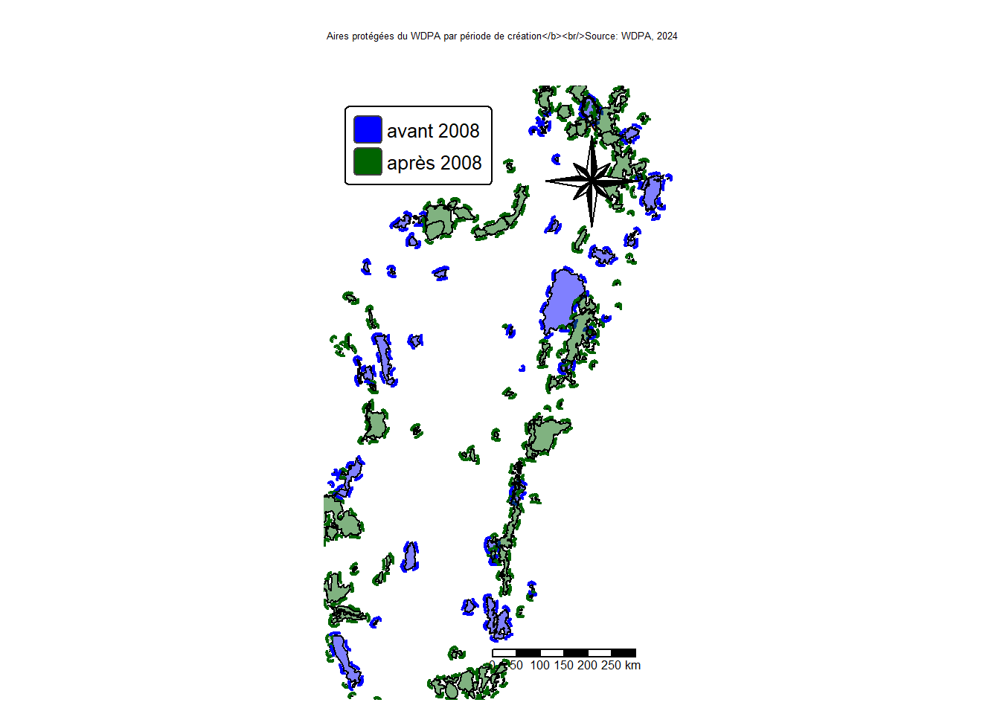
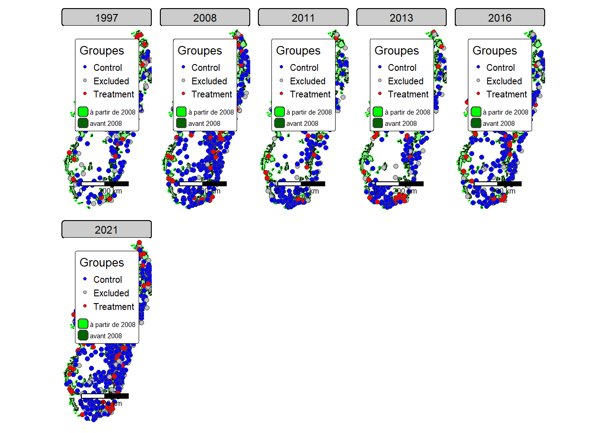

Code
# Library
library(tidyverse)
library(haven)
library(sf)
library(tmap)
library(gt)
library(geodata)
library(writexl)
library(units)
library(leaflet)
library(readxl)
# Systèmes de coordonnées de référence
standard_crs <- 4326
mdg_crs <- 29702
# On charge les données gps
gps_1997_initial <- st_read("data/raw/dhs/DHS_1997/MDGE32FL/MDGE32FL.shp")Reading layer `MDGE32FL' from data source
`C:\Users\irian\Documents\Analyse de données\PA-livelihood-impact-dhs\data\raw\dhs\DHS_1997\MDGE32FL\MDGE32FL.shp'
using driver `ESRI Shapefile'
Simple feature collection with 269 features and 20 fields
Geometry type: POINT
Dimension: XY
Bounding box: xmin: 6.661338e-16 ymin: -25.28438 xmax: 50.45773 ymax: 0
Geodetic CRS: WGS 84Code
gps_2008_initial <- st_read("data/raw/dhs/DHS_2008/MDGE53FL/MDGE53FL.shp") Reading layer `MDGE53FL' from data source
`C:\Users\irian\Documents\Analyse de données\PA-livelihood-impact-dhs\data\raw\dhs\DHS_2008\MDGE53FL\MDGE53FL.shp'
using driver `ESRI Shapefile'
Simple feature collection with 594 features and 20 fields
Geometry type: POINT
Dimension: XY
Bounding box: xmin: 0 ymin: -25.52226 xmax: 50.29224 ymax: 0
Geodetic CRS: WGS 84Code
gps_2011_initial <- st_read("data/raw/dhs/DHS_2011/MDGE61FL/MDGE61FL.shp") Reading layer `MDGE61FL' from data source
`C:\Users\irian\Documents\Analyse de données\PA-livelihood-impact-dhs\data\raw\dhs\DHS_2011\MDGE61FL\MDGE61FL.shp'
using driver `ESRI Shapefile'
Simple feature collection with 267 features and 20 fields
Geometry type: POINT
Dimension: XY
Bounding box: xmin: 0 ymin: -25.55782 xmax: 50.27262 ymax: 0
Geodetic CRS: WGS 84Code
gps_2013_initial <- st_read("data/raw/dhs/DHS_2013/MDGE6AFL/MDGE6AFL.shp") Reading layer `MDGE6AFL' from data source
`C:\Users\irian\Documents\Analyse de données\PA-livelihood-impact-dhs\data\raw\dhs\DHS_2013\MDGE6AFL\MDGE6AFL.shp'
using driver `ESRI Shapefile'
Simple feature collection with 274 features and 20 fields
Geometry type: POINT
Dimension: XY
Bounding box: xmin: 43.55216 ymin: -25.55638 xmax: 50.26784 ymax: -12.13444
Geodetic CRS: WGS 84Code
gps_2016_initial <- st_read("data/raw/dhs/DHS_2016/MDGE71FL/MDGE71FL.shp")Reading layer `MDGE71FL' from data source
`C:\Users\irian\Documents\Analyse de données\PA-livelihood-impact-dhs\data\raw\dhs\DHS_2016\MDGE71FL\MDGE71FL.shp'
using driver `ESRI Shapefile'
Simple feature collection with 358 features and 20 fields
Geometry type: POINT
Dimension: XY
Bounding box: xmin: 43.64903 ymin: -25.47617 xmax: 50.31325 ymax: -12.27554
Geodetic CRS: WGS 84Code
gps_2021_initial <- st_read("data/raw/dhs/DHS_2021/MDGE81FL/MDGE81FL.shp")Reading layer `MDGE81FL' from data source
`C:\Users\irian\Documents\Analyse de données\PA-livelihood-impact-dhs\data\raw\dhs\DHS_2021\MDGE81FL\MDGE81FL.shp'
using driver `ESRI Shapefile'
Simple feature collection with 650 features and 20 fields
Geometry type: POINT
Dimension: XY
Bounding box: xmin: 43.3746 ymin: -25.5548 xmax: 50.36067 ymax: -11.99102
Geodetic CRS: WGS 84Code
# Fonction qui vérifie que les coordonnées ne sont pas nulles
check_coordinates <- function(dhs_gps, country_polygon, negate = FALSE) {
dhs_gps %>%
filter(LONGNUM != 0 | LATNUM != 0)
}
gps_1997 <- check_coordinates(gps_1997_initial, contour_mada)
gps_2008 <- check_coordinates(gps_2008_initial, contour_mada)
gps_2011 <- check_coordinates(gps_2011_initial, contour_mada)
gps_2013 <- check_coordinates(gps_2013_initial, contour_mada)
gps_2016 <- check_coordinates(gps_2016_initial, contour_mada)
gps_2021 <- check_coordinates(gps_2021_initial, contour_mada)
# On charge les données des AP
wdpa_terrestre_mod <- st_read("data/derived/wdpa_terrestre_mod.shp")Reading layer `wdpa_terrestre_mod' from data source
`C:\Users\irian\Documents\Analyse de données\PA-livelihood-impact-dhs\data\derived\wdpa_terrestre_mod.shp'
using driver `ESRI Shapefile'
Simple feature collection with 137 features and 35 fields
Geometry type: MULTIPOLYGON
Dimension: XY
Bounding box: xmin: 43.18819 ymin: -25.606 xmax: 50.47733 ymax: -11.98403
Geodetic CRS: WGS 84Code
wdpa_terrestre_mod <- wdpa_terrestre_mod %>%
dplyr::rename(
WDPA_PID = WDPA_PI,
ORIG_NAME = ORIG_NA,
DESIG_ENG = DESIG_E,
DESIG_TYPE = DESIG_T,
IUCN_CAT = IUCN_CA,
INT_CRIT = INT_CRI,
REP_M_AREA = REP_M_A,
REP_AREA = REP_ARE,
NO_TK_AREA = NO_TK_A,
STATUS_YR = STATUS_,
GEOMETRY_TYPE = GEOMETR,
AREA_KM2 = AREA_KM,
area_km2 = are_km2
)
# Spécification des AP avant-après 2008 avec un Buffer de 5 km------------------------
buffer_dist <- 5000
wdpa_before_2008 <- wdpa_terrestre_mod %>%
filter(STATUS_YR < 2008)
wdpa_from_2008 <- wdpa_terrestre_mod %>%
filter(STATUS_YR >= 2008)
# Créer des buffers de 5 km autour des AP
buffer_5km_before_2008 <- wdpa_before_2008 %>%
st_transform(mdg_crs) %>%
st_buffer(dist = buffer_dist) %>%
st_make_valid() %>%
st_union() %>%
st_as_sf() %>%
st_make_valid() %>%
st_transform(standard_crs)
buffer_5km_from_2008 <- wdpa_from_2008 %>%
st_transform(mdg_crs) %>%
st_buffer(dist = buffer_dist) %>%
st_make_valid() %>%
st_union() %>%
st_as_sf() %>%
st_make_valid() %>%
st_transform(standard_crs)
# Visualisation des cartes------------------------------------------------------------
tm_shape(wdpa_before_2008) +
tm_polygons(fill = "blue",
col = "black",
fill_alpha = 0.5) +
tm_shape(buffer_5km_from_2008) +
tm_borders(col = "darkgreen", lwd = 2, lty = "dashed", fill.legend = tm_legend_hide()) +
tm_shape(buffer_5km_before_2008) +
tm_borders(col = "blue", lwd = 2, lty = "dashed", fill.legend = tm_legend_hide()) +
tm_shape(wdpa_from_2008) +
tm_polygons(fill = "darkgreen",
col = "black",
fill_alpha = 0.5) +
tm_add_legend(type = "polygons", fill = c("blue", "darkgreen"), labels = c("avant 2008", "après 2008")) +
tm_title("Aires protégées du WDPA par période de création</b><br/>Source: WDPA, 2024") +
tm_layout(
legend.outside = TRUE,
legend.position = c("left", "top"),
frame = FALSE,
legend.title.size = 1.2,
legend.text.size = 0.8
) +
tm_compass(type = "8star", position = c("right", "top")) +
tm_scalebar(position = c("right", "bottom"))
Code
# Classification des clusters---------------------------------------------------------
#| fig-cap: "Grappes d'enquêtes DHS par rapport aux aires protégées existantes"
classify_clusters_with_pa <- function(cluster_gps,
buffer_before, # union of <2008
wdpa_after, # polygons >=2008 (no union)
buffer_dist = 5000,
label_treat = "Treatment",
label_excl = "Excluded",
label_ctrl = "Control") {
# per-PA buffers (keep attrs)
wdpa_after_buf <- wdpa_after %>%
st_transform(mdg_crs) %>%
mutate(geometry = st_buffer(geometry, buffer_dist)) %>%
st_transform(standard_crs)
# flags
in_after <- st_within(cluster_gps, st_union(wdpa_after_buf), sparse = FALSE)[,1]
in_before <- st_within(cluster_gps, buffer_before, sparse = FALSE)[,1]
base <- cluster_gps %>%
mutate(groupe = case_when(
in_after & !in_before & URBAN_RURA == "R" ~ label_treat,
in_before | URBAN_RURA == "U" ~ label_excl,
TRUE ~ label_ctrl
))
# enrich treated with oldest+nearest PA
treated_pts <- base %>% filter(groupe == label_treat)
if (nrow(treated_pts) == 0) return(base)
cand <- st_join(treated_pts, wdpa_after_buf, join = st_within, left = FALSE) %>%
mutate(
.idx = match(WDPAID, wdpa_after$WDPAID),
dist_km = as.numeric(
st_distance(
geometry,
wdpa_after$geometry[.idx],
by_element = TRUE
)
) / 1000
) %>%
dplyr::select(-.idx)
best <- cand %>%
group_by(DHSCLUST) %>%
slice_min(STATUS_YR, with_ties = TRUE) %>%
slice_min(dist_km, with_ties = FALSE) %>%
ungroup() %>%
st_drop_geometry() %>%
select(DHSYEAR, DHSCLUST, WDPAID, STATUS_YR, IUCN_CAT, dist_km)
base %>% left_join(best, by = c("DHSYEAR","DHSCLUST"))
}
gps_1997_class <- classify_clusters_with_pa(gps_1997, buffer_5km_before_2008,
wdpa_from_2008)
gps_2008_class <- classify_clusters_with_pa(gps_2008, buffer_5km_before_2008,
wdpa_from_2008)
gps_2011_class <- classify_clusters_with_pa(gps_2011, buffer_5km_before_2008,
wdpa_from_2008)
gps_2013_class <- classify_clusters_with_pa(gps_2013, buffer_5km_before_2008,
wdpa_from_2008)
gps_2016_class <- classify_clusters_with_pa(gps_2016, buffer_5km_before_2008,
wdpa_from_2008)
gps_2021_class <- classify_clusters_with_pa(gps_2021, buffer_5km_before_2008,
wdpa_from_2008)
gps_all_class <- bind_rows(
gps_1997_class,
gps_2008_class,
gps_2011_class,
gps_2013_class,
gps_2016_class,
gps_2021_class
)
# Créer un plot pour visualiser la carte des AP avec les clusters----------------------
tm_shape(buffer_5km_from_2008) +
tm_borders("green",
lwd = 2,
lty = "dashed",
fill.legend = tm_legend_hide()) +
tm_shape(buffer_5km_before_2008) +
tm_borders("darkgreen",
lwd = 2,
lty = "dashed",
fill.legend = tm_legend_hide()) +
tm_shape(wdpa_from_2008) +
tm_polygons(fill = "green",
fill_alpha = 0.5,
col = "black",
fill.legend = tm_legend(title = "à partir de 2008", position = tm_pos_in("right", "top"))) +
tm_shape(wdpa_before_2008) +
tm_polygons(fill = "darkgreen",
fill_alpha = 0.5,
col = "black",
fill.legend = tm_legend(title = "avant 2008", position = tm_pos_in("right", "top"))) +
tm_shape(gps_all_class) +
tm_symbols(
fill = "groupe",
fill.legend = tm_legend(title = "Groupes"),
fill.scale = tm_scale(values = c("Treatment" = "red", "Control" = "blue", "Excluded" = "gray")),
size = 0.5,
shape = 21
) +
tm_facets("DHSYEAR") +
tm_add_legend(type = "polygons",
fill = c("green", "darkgreen"),
labels = c("à partir de 2008", "avant 2008")) +
tm_layout(
legend.outside = TRUE,
legend.position = c("left", "top"),
frame = FALSE
) +
tm_scalebar(position = c("left", "bottom"))
Code
# Tableau récapitulatif du nombre de grappes d'enquête classées dans chaque groupe-----
treated_sub_clusters <- gps_all_class %>%
st_drop_geometry() %>%
filter(groupe == "Treatment") %>%
mutate(subcat = case_when(
!is.na(STATUS_YR) & DHSYEAR < STATUS_YR ~ "Avant traitement",
!is.na(STATUS_YR) & DHSYEAR >= STATUS_YR ~ "Déjà traités",
TRUE ~ NA_character_
)) %>%
count(DHSYEAR, subcat, name = "n_clusters") %>%
pivot_wider(names_from = subcat, values_from = n_clusters, values_fill = 0)
# Ligne "Ensemble" (tous les traités, quel que soit le statut)
treated_all_clusters <- gps_all_class %>%
st_drop_geometry() %>%
filter(groupe == "Treatment") %>%
count(DHSYEAR, name = "Ensemble")
# Colonnes Contrôles / Exclus
ctrl_excl_clusters <- gps_all_class %>%
st_drop_geometry() %>%
filter(groupe %in% c("Control", "Excluded")) %>%
mutate(Groupe = recode(groupe, Control = "Contrôles", Excluded = "Exclus")) %>%
count(DHSYEAR, Groupe, name = "n") %>%
pivot_wider(names_from = Groupe, values_from = n, values_fill = 0)
# Assemblage large (années en lignes)
tab_wide_clusters <- list(treated_sub_clusters, treated_all_clusters,
ctrl_excl_clusters) %>%
Reduce(function(x, y) full_join(x, y, by = "DHSYEAR"), .) %>%
arrange(DHSYEAR) %>%
mutate(across(-DHSYEAR, ~replace_na(.x, 0L)))
# Tableau gt : spanner "Traitement" + colonnes Contrôles / Exclus
gt_table_clusters <- tab_wide_clusters %>%
rename(Année = DHSYEAR) %>%
gt() %>%
tab_header(title = "Nombre de grappes par année d'enquête et par groupe") %>%
cols_label(
`Avant traitement` = "Avant traitement",
`Déjà traités` = "Déjà traités",
Ensemble = "Ensemble",
`Contrôles` = "Contrôles",
`Exclus` = "Exclus"
) %>%
tab_spanner(
label = "Traitement",
columns = c(`Avant traitement`, `Déjà traités`, Ensemble)
) %>%
fmt_number(
columns = c(`Avant traitement`, `Déjà traités`, Ensemble, `Contrôles`, `Exclus`),
decimals = 0,
use_seps = TRUE
) %>%
cols_align(align = "center", columns = everything()) %>%
tab_footnote(
footnote = md("**Avant traitement** : DHSYEAR < STATUS_YR (AP pas encore créée). **Déjà traités** : DHSYEAR ≥ STATUS_YR. **Ensemble** : total des grappes *Traitement*."),
locations = cells_title(groups = "title")
)
gt_table_clusters| Nombre de grappes par année d'enquête et par groupe1 | |||||
|---|---|---|---|---|---|
| Année |
Traitement
|
Contrôles | Exclus | ||
| Avant traitement | Déjà traités | Ensemble | |||
| 1997 | 21 | 0 | 21 | 128 | 119 |
| 2008 | 42 | 0 | 42 | 374 | 169 |
| 2011 | 16 | 1 | 17 | 168 | 81 |
| 2013 | 25 | 3 | 28 | 163 | 83 |
| 2016 | 0 | 27 | 27 | 252 | 79 |
| 2021 | 0 | 58 | 58 | 394 | 198 |
| 1 Avant traitement : DHSYEAR < STATUS_YR (AP pas encore créée). Déjà traités : DHSYEAR ≥ STATUS_YR. Ensemble : total des grappes Traitement. | |||||
Code
# Tableau récapitulatif du nombre de ménages d'enquête classées dans chaque groupe-----
load_dhs_data <- function(dhs_folder, year, identifier) {
folder_pattern <- paste0(".*", year, ".*", identifier)
matching_folder <- list.dirs(dhs_folder, full.names = TRUE, recursive = TRUE) %>%
keep(~ str_detect(.x, folder_pattern))
if (length(matching_folder) == 0) {
stop("No folder found for the specified year and identifier.")
}
if (identifier == "GE") {
file_pattern <- "\\.shp$"
data_loader <- function(file) st_read(file, quiet = TRUE)
} else {
file_pattern <- "\\.[Dd][Tt][Aa]$"
data_loader <- read_dta
}
target_file <- list.files(matching_folder, pattern = file_pattern, full.names = TRUE)
if (length(target_file) == 0) {
stop("No valid file found in the folder.")
}
data <- data_loader(target_file)
return(data)
}
dhs_folder <- "data/raw/dhs"
# Années disponibles
years_all <- sort(unique(gps_all_class$DHSYEAR))
# Compte ménages (toutes observations)
households_counts_all <- map_dfr(years_all, function(y) {
# HR de l'année
hr <- load_dhs_data(dhs_folder, y, "HR") %>%
mutate(DHSYEAR = y) # pour la jointure avec la classification
# Classification des grappes de l'année
cl_y <- gps_all_class %>%
st_drop_geometry() %>%
filter(DHSYEAR == y) %>%
select(DHSYEAR, DHSCLUST, groupe, STATUS_YR)
# Jointure ménages <- classification (par cluster hv001)
hr_cl <- hr %>%
select(DHSYEAR, hv001) %>%
left_join(cl_y, by = c("DHSYEAR" = "DHSYEAR", "hv001" = "DHSCLUST"))
# Comptes par sous-catégories du traitement (DHSYEAR vs STATUS_YR)
avant <- hr_cl %>% filter(groupe == "Treatment", !is.na(STATUS_YR), DHSYEAR < STATUS_YR) %>% nrow()
deja <- hr_cl %>% filter(groupe == "Treatment", !is.na(STATUS_YR), DHSYEAR >= STATUS_YR) %>% nrow()
ens <- hr_cl %>% filter(groupe == "Treatment") %>% nrow()
ctrl <- hr_cl %>% filter(groupe == "Control") %>% nrow()
excl <- hr_cl %>% filter(groupe == "Excluded") %>% nrow()
tibble(
DHSYEAR = y,
`Avant traitement` = avant,
`Déjà traités` = deja,
Ensemble = ens,
`Contrôles` = ctrl,
`Exclus` = excl
)
})
# Tableau gt (ménages, toutes observations)
gt_table_menages_all <- households_counts_all %>%
rename(Année = DHSYEAR) %>%
gt() %>%
tab_header(title = "Nombre de ménages par année d'enquête et par groupe") %>%
cols_label(
`Avant traitement` = "Avant traitement",
`Déjà traités` = "Déjà traités",
Ensemble = "Ensemble",
`Contrôles` = "Contrôles",
`Exclus` = "Exclus"
) %>%
tab_spanner(
label = "Traitement",
columns = c(`Avant traitement`, `Déjà traités`, Ensemble)
) %>%
fmt_number(
columns = c(`Avant traitement`, `Déjà traités`, Ensemble, `Contrôles`, `Exclus`),
decimals = 0, use_seps = TRUE
) %>%
cols_align(align = "center", columns = everything()) %>%
tab_footnote(
footnote = md("**Avant traitement** : DHSYEAR < STATUS_YR (AP pas encore créée). **Déjà traités** : DHSYEAR ≥ STATUS_YR. **Ensemble** : total des ménages du groupe *Traitement*."), locations = cells_title(groups = "title"))
gt_table_menages_all | Nombre de ménages par année d'enquête et par groupe1 | |||||
|---|---|---|---|---|---|
| Année |
Traitement
|
Contrôles | Exclus | ||
| Avant traitement | Déjà traités | Ensemble | |||
| 1997 | 624 | 0 | 624 | 4,141 | 2,391 |
| 2008 | 1,266 | 0 | 1,266 | 11,221 | 5,091 |
| 2011 | 496 | 32 | 528 | 5,076 | 2,462 |
| 2013 | 778 | 96 | 874 | 5,092 | 2,608 |
| 2016 | 0 | 863 | 863 | 7,933 | 2,488 |
| 2021 | 0 | 1,806 | 1,806 | 12,487 | 6,217 |
| 1 Avant traitement : DHSYEAR < STATUS_YR (AP pas encore créée). Déjà traités : DHSYEAR ≥ STATUS_YR. Ensemble : total des ménages du groupe Traitement. | |||||
Code
# Enregistrement
all_class_5km <- gps_all_class %>%
select(DHSYEAR, DHSCLUST, GROUP = groupe, WDPAID, STATUS_YR, IUCN_CAT, dist_km)
write_csv(all_class_5km, "data/derived/cluster_treatment_classification_staggered_5km.csv")
write_csv(wdpa_before_2008, "data/derived/wdpa_before_2008_5km.csv")
write_csv(wdpa_from_2008, "data/derived/wdpa_from_2008_5km.csv")